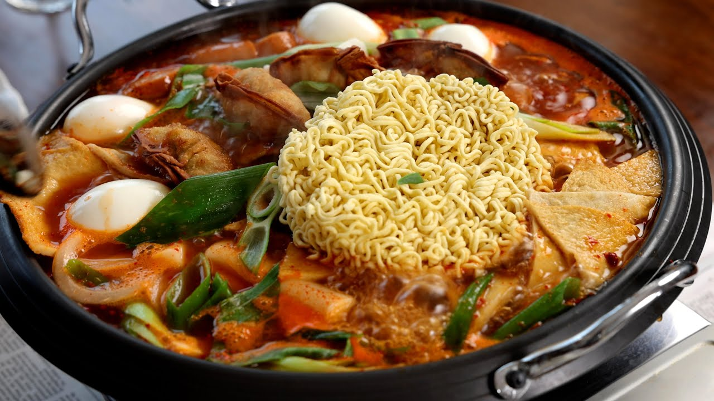

Jeukseok Tteokbokki:

Jeukseok Tteokbokki is a tasty and simple Korean dish that I love to enjoy while I game.
Below are the ingredients and steps to make the dish for yourself!
Ingredients:
For the sauce:
- 2 garlic cloves, minced
- The package of soup powder from the Korean ramyeon (instant noodles)
- 1/4 cup gochu-garu (Korean hot pepper flakes)
- 1/4 cup gochujang (Korean hot pepper paste)
- 1 tablespoon chunjang (black bean paste)
- 1 to 2 tablespoons sugar
- 1/2 cup water
In the pan:
- 8 ounces cabbage, cut into bite sized pieces
- 2 ounces onion, sliced
- 2 dae-pa (large green onion), or 6 green onions, cut into 2 inch long pieces
- A few strips (about 1 ounce) of carrot (optional)
- 4 ounces dangmyeon (sweet potato starch noodles), soaked in cold water for 40 minutes to 1 hour, and drained
- 12 ounces garaetteok (tube-shaped rice cake) fresh, frozen, or homemade
- 2 sheets (80 grams) of eomuk (fish cakes), cut into bite sized pieces
- 1 sausage, cut into 4 pieces (optional)
- Uncooked noodles from 1 package of Korean ramyeon (instant noodles)
- 4 fried mandu dumplings (optional)
- 4 hard-boiled eggs, shelled
- 5 cups water
- 4 slices of provolone cheese, or mozzarella (optional)
For the stir-fried rice (bokkeumbap):
- 1 bowl of rice
- 1 package of oiled and toasted gim (dried seaweed paper), cut into small pieces
- 2 teaspoons toasted sesame oil
- 1 teaspoon toasted sesame seeds
Directions:
Make sauce:
- Combine garlic, soup powder, gochu-garu, gochujang, chunjang, sugar, and water in a medium bowl.
- Mix well and set aside.
Fill the pan with the ingredients:
- In a wide pan or skillet, add the cabbage, onion, half of the green onion, and carrot (if used).
- Add the starch noodles, rice cake, fish cakes, and sausage (if used).
- Add the sauce and place the ramyeon noodles on top of the sauce.
- Add fried mandu (if used) and eggs.
- Sprinkle the rest of the green onion over top.
- Add water (or anchovy kelp stock or vegetable stock)
Cook & serve:
- Set 4 individual bowls or plate on the table along with forks, chopsticks, spoons, napkins, and a bowl of danmuji (if used).
- Place the pan on the gas burner at the table. Turn on the heat to high heat. When it starts boiling about 8 minutes later, add the cheese (if used). Carefully stir with a large spoon so that all the ingredients are evenly cooked.
- Ladle an egg into each individual bowl along with a little broth. Occasionally stir the stew and also ladle some rice cake, cheese, noodles, fish cakes, vegetables, and ramyeon into the individual bowls. Cook, eat, and enjoy having fun talking to each other! You can reduce the heat to low to keep the broth from boiling down.
Make bokkeumbap (stir-fried rice):
- When you get close to the bottom of the pan, you can make stir-fried rice with the everything there. Add the rice and stir-fry with the ingredients and broth at the bottom of the pan.
- Finish it off with the shredded gim, sesame oil, and sesame seeds.
- Remove from the heat and serve by adding some stir fried rice to everyone’s bowl.
Home